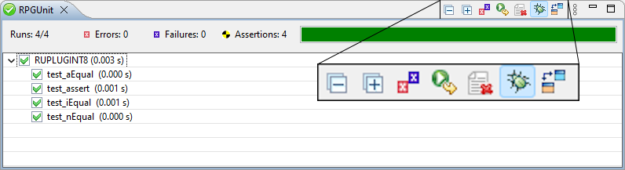

Code Coverage
Getting code coverage to work is a bit tedious. So far it works following these steps:
- Compile your test suite service programs with debug view *ALL.
- Set a service entry point (SEP) to your test suite service program.
- Switch the SEP to Code Coverage Mode:

- Enable debug mode for the iRPGUnit plug-in before you run the unit test.

- Run the unit test.